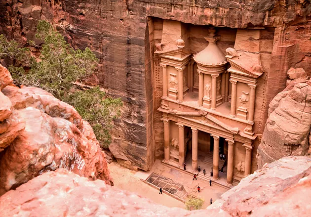

Новые чудеса света
Как известно, чудес на свете семь. Нет смысла их здесь перечислять, так как все кроме египетской пирамиды Хеопса давно канули в лету. То есть мы даже не можем оценить сегодня их чудесность, верим на слово летописцам древности.
Поразмыслив немного, энтузиасты из организации New Open World Corporation (NOWC) несколько лет назад решили провести опрос и выяснить, какие именно сооружения можно считать новейшими чудесами света. Голосование проводилось в Лиссабоне и там же, 07.07.2007 были оглашены результаты, с которыми мы вас и хотим познакомить. Теперь у человечества есть новые чудеса света, которые стоит поскорее осмотреть, а то вдруг они тоже куда-нибудь все исчезнут…
Чтобы осмотреть все новые чудеса света, вам нужно будет объехать несколько континентов и поставить на свой заграничный паспорт не один штамп, но это того стоит, ведь так? А когда закончатся все семь, можно будет идти дальше по списку претендентов на новые чудеса. В их состав входят Айя-София в Турции, дворец Альгамбра в Испании, Эйфелева башня, Стоунхендж и другие достижения архитектурной мысли человечества.
Великая китайская стена (КНР)
Построив эту стену, протяжённостью 8851,8 километров, китайцы, в очередной раз, хотели доказать всему миру, что они – избранная и закрытая ото всех империя. Стена строилась и достраивалась около двух тысяч лет, а камни склеивались особой смесью из рисовой каши и извести. Посмотреть на типичный пример китайской культуры можно, приехав почти в любую точку северного Китая. Возможно, осмотреть её участок и из Пекина, но там будет шумно и многолюдно.
Бывалые туристы советуют отъехать в горные районы – там стена поросла деревьями и бежит по скалистым хребтам, откуда открывается захватывающий дух вид. Из развлечений, кроме пейзажей и духа древности, можно ещё посоветовать аттракцион «тобогган» — предприимчивые китайцы установили на некоторых участках металлические желоба, по которым нужно спускаться на доске с колёсами и рычагом, регулирующим скорость. В общем если хотите покататься на санках, но ледяные горки на родине наскучили — попробуйте Великую Китайскую стену. Как спуститесь, начинайте покупать магниты, монетки и традиционные китайские шляпы – торговцев сувенирами довольно много именно в районе столицы. Увидеть стену надо обязательно – рисовая каша уже не может держать все эти камни и она потихоньку, разрушается. В 2012 году из-за сильных ливней обрушилось 36 метров стены.
Как добраться: Самолётом до Пекина, а там — на такси, маршрутке, автобусе или электричке до ближайшего участка стены «Бадалин».
Колизей (Италия)
Самый большой амфитеатр Рима и вообще Античного мира уже на заре его существования порывались занести в список чудес света, но как-то не срослось и теперь Колизей занимает почётное место в новейшем списке. Побывать в Риме и не увидеть арену, на которой происходили кровавые поединки осуждённых на казнь и прочие красочные шоу – просто грешно. Поэтому по прибытии в столицу Италии, отправляйтесь на Палатинский холм на Виа ди Сан-Грегорио, 30 или на площадь Санта-Мария Нова, 53 – это адреса билетных касс. Билет стоит 12 евро и действует 48 часов – очень удобно. Заодно сможете попасть в Римский форум и Палатин – билет даёт право осмотра и этих кусков античности.
Осматривая Колизей, становится понятно, почему на его территории почти не снимаются фильмы о гладиаторах – он слишком сильно разрушен. Особенно подкосило его то обстоятельство, что долгое время, строительный материал разрушающегося Колизея использовался для постройки римских вилл и палаццо. Если хотите более новый Колизей, то вам в Тунис – именно там расположен второй по величине амфитеатр в мире. Он хорошо сохранился и используется для киносъёмок. В римский Колизей лучше, конечно, заказать экскурсию – на ней вам расскажут, что построен он был, чтобы удалить из города воспоминания о правлении Нерона (он построен на территории его резиденции), а ещё покажут, стоячие места для женщин и рабов с которых они наблюдали за импровизированными морским сражениями, для которых арена Колизея заливалась водой.
Как добраться: Самолётом до Рима, а там, на метро до станции «Colosseo».
Мачу-Пикчу (Перу)
Пожалуй, самое древнее чудо. Такая приблизительность обусловлена тем, что никто доподлинно не знает ни возраста этого города, затерянного в перуанских джунглях, ни количества его жителей, ни назначения. Обнаружили его только в 1911 году и было установлено, что все инки, проживавшие в городе, бесследно исчезли, когда на территорию Южной Америки вторглись испанцы. Пирамиды, обсерватории, каменные террасы, дома, храмы, акведуки и алтари – всё это привлекает туристов со всего света, жаждущих поиграть в Индиану Джонса. Добираться до Мачу-Пикчу не так легко, но это того стоит – по пути вы сможете осмотреть страну во всей её красе. От столицы Перу нужно доехать до столицы инков – Куско. А там – железная дорога, такси, маршрутки.
Всё что угодно, но помните, что путь проходит по высочайшему горному серпантину – немного валерьянки с собой и всё будет хорошо. Есть вариант другого маршрута — до «города в облаках» можно дойти старой индейской тропой. Тропа инков – это вымощенная камнями дорога, джунгли, горы, виды, археологические древности, заброшенные городки и другая красота. Так что надевайте мокасины, запасайтесь стрелами, трубкой мира и вперёд – до Мачу-Пикчу вас ждут 43 километра. Но помните, что это будет настоящий поход и займёт от 2 до 4 дней. Бронировать экскурсию по Inka Trail нужно за 5 месяцев – ежедневно на территорию тропы пускают только 500 человек, около 200 из которых – туристы, а остальные – обслуживающий персонал.
Как добраться: Самолётом до Лимы, далее внутренним рейсом до Куско, оттуда на автобусе либо по тропе инков пешком.
Петра (Иордания)
Этот действительно красивый город полностью вырезан из розового песчаника посреди иорданской пустыни. Очевидно, что древний народ набатеи знали толк в архитектуре и инженерии – в городе есть сложная система канализации, акведуки и терассы для выращивания садов, усыпальницы и мавзолеи. Как и многие подобные сооружения, Петра обросла легендами со времён её открытия одним предприимчивым швейцарцем в начале 19 века. Так, каменная урна, расположенная на фасаде храма Эль-Хасне, считалась доверху наполненной золотом или искателями золота – кому какая версия больше по душе.
Кстати, это тот самый храм, который является визитной карточкой Иордании, чаще всего иллюстрирующий Петру. Впрочем, храмов и легенд тут на три дня осмотра – именно столько действует билет в город. Начинать знакомство с городом следует из столицы – города Амман. По пути, заодно, увидите множество древностей: города, руины храмов и гору, с которой по преданию, Моисей увидел Землю Обетованную. Иордания хороша ещё и тем, что до Израиля и Египта от неё рукой подать – можете заодно съездить и туда, а потом вернуться и просто полежать на берегу Мёртвого моря, здесь оно особенно живописное.
Как добраться: Самолётом до Аммана, а там, на автобусе, маршрутке или такси. Либо в ходе однодневной экскурсии из Эйлата, Шарм-эль-Шейха и других курортов Синайского полуострова.
Тадж-Махал (Индия)
Пожалуй, одно из самых романтичных мест на земле. Вы ведь, наверняка, слышали эту историю про то, как индийский император построил этот мавзолей в честь горячо любимой жены, умершей в родах? В общем-то, учитывая то, что эти роды были 14 для Мумтаз-Махал, ничего удивительного в её смерти нет, однако любовь мужа увековечила её память на века. Тадж-Махал ежегодно посещают миллионы – это один из главных символов Индии. Есть два варианта осмотра царской усыпальницы: днём, когда Тадж-Махал окрашивается в розовый и золотистый цвет и ночные экскурсии, когда храм приобретает серебристый оттенок при свете луны. Бывалые туристы советуют снять номер в отеле неподалёку и иметь возможность придти к жемчужине Индии с раннего утра, когда толпы туристов ещё не появились.
Внутри мавзолея нельзя фотографировать и ходить в обуви, а возле входа с вами, наверняка, захотят сфотографироваться индийцы – белые люди здесь, почему-то каждый раз вызывают восторг. Можете заказать рассказ гида. Но только не разочаровывайтесь в финале этой романтичной истории. Говорят, что император, хотел построить такую же усыпальницу для себя, только в чёрном цвете. Он хотел, чтобы она располагалась напротив усыпальницы жены. Планам не суждено было сбыться: его сверг с престола их общий с Мумтаз-Махал сын, а бедняге только и оставалось, что любоваться на эту «слезу, сверкающую на лице вечности» из темницы, напротив. Вот и рожай после этого 14 детей.
Как добраться: Самолётом до Дели, потом на поезде до Агры. На автобусе тоже можно, но это займёт гораздо больше времени. От ж/д вокзала на такси.
Статуя Христа-Искупителя (Бразилия)
Один из самых известных монументов в мире, возможно, более всего напоминает чудеса света из прошлого, вроде Колосса Родосского. Статуя Христа с распростёртыми объятиями видна, практически, из каждой точки Рио. До горы Каркавадо, на которой она установлена, ходят автобусы. Можно добраться на миниавтобусе, автобусе или поезде. Лучше всего сочетать осмотр статуи с прогулкой по знаменитым пляжам Копакабана и Ипанема, обязательно в белых штанах. Потом можно завернуть в восточную часть Рио-де-Жанейро и подняться на гору Сахарная голова – ещё один символ страны.
Подъём на гору Каркавадо не вызывает больших трудностей, так как здесь установлен эскалатор, но если хотите совместить экскурсию со спортом, можете подняться по лестнице в 220 ступеней. Со смотровой площадки открывается вид на залив Гуанабара и гору Шураглоф. Это и вправду красиво, хоть статуя и не имеет какой-то давней истории – возвели её между 1922 и 1931 годами. Cristo Redentor такой же символ Бразилии, как и её карнавал и обязателен к просмотру. А сразу после него вперёд – покорять ночной Рио, здесь и помимо 30-метровой статуи есть на что посмотреть.
Как добраться: До Рио-де-Жанейро на самолёте, там, на такси, автобусе или поезде до Cristo Redentor
Чичен-Ица (Мексика)
Латинской Америке повезло с чудесами: на её территории аж три чуда. Третье из них расположено в Мексике. Этот политический и культурный центр майя, подобно Мачу-Пикчу опустел по неизвестным причинам. Майя оставили после себя доказательство их высокоразвитой цивилизации, чего стоит один известный календарь, который наделал много шума в декабре 2012 года. У них были обсерватории, канализация, храмы, поля для игры в мяч и колодцы для жертвоприношений. В Чичен-Ице же находятся и ступенчатые пирамиды, не уступающие египетским ни по размерам, ни по возрасту. Говорят, система городов майя с самолёта удивительно напоминает компьютерную плату, а кто-то уверен, что эти пирамиды обязательно как-то связаны с космосом. Как бы то ни было, посмотреть на это стоит. Один из аттракционов Чичен-Ицы – это дни весеннего и осеннего равноденствия, когда игра света и тени создаёт на каменной балюстраде иллюзию божества майя – змеи Кукулькан, ползущей за своим хвостом.
Поглазеть на эти забавы майя собираются огромные толпы туристов, поэтому целесообразнее ехать не прямо в эти дни, тем более змея хорошо просматривается и спустя неделю или две. В остальном здесь всё проходит, примерно, как и у египетских братьев – палящая жара, музей, торговцы сувенирами, а по вечерам грандиозное световое шоу на испанском. Если попросите, вам выдадут плеер и наушники с записью на английском. До Чичен-Ица проще всего заказать экскурсию, если вы приехали отдыхать на один из курортов Ривьеры-Майя. Если приедете самостоятельно, то лучше задержаться на целый день – это минимум для осмотра города. На случай, если припозднитесь, в Чичен-Ице есть отели Villas Arqueologicas, Hasienda Chichen Resort и другие.
Как добраться: До Мехико на самолёте. Оттуда до Мерриды или Канкуна. От них на автобусе до Чичен-Ицы.